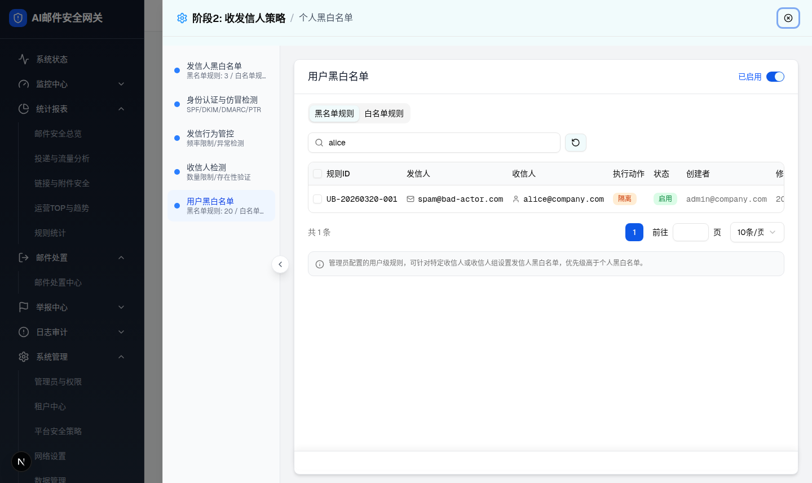
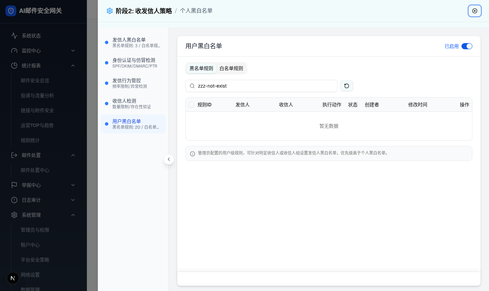
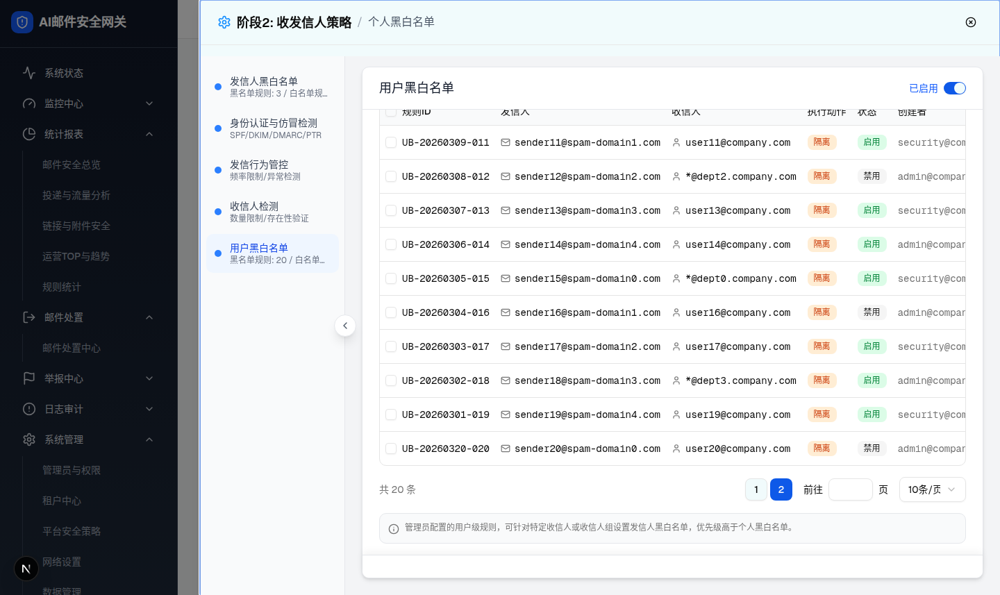
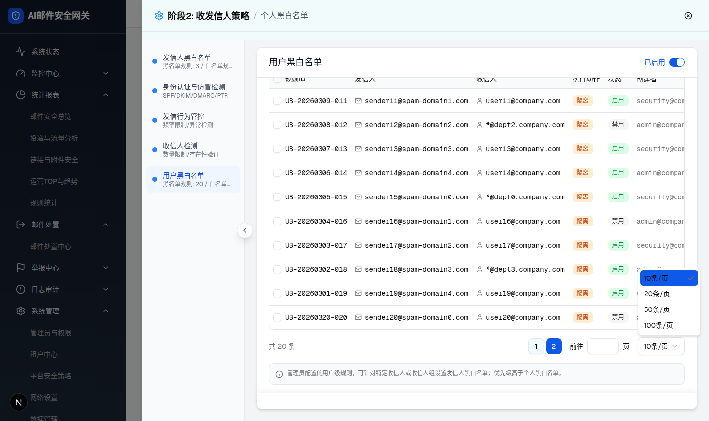
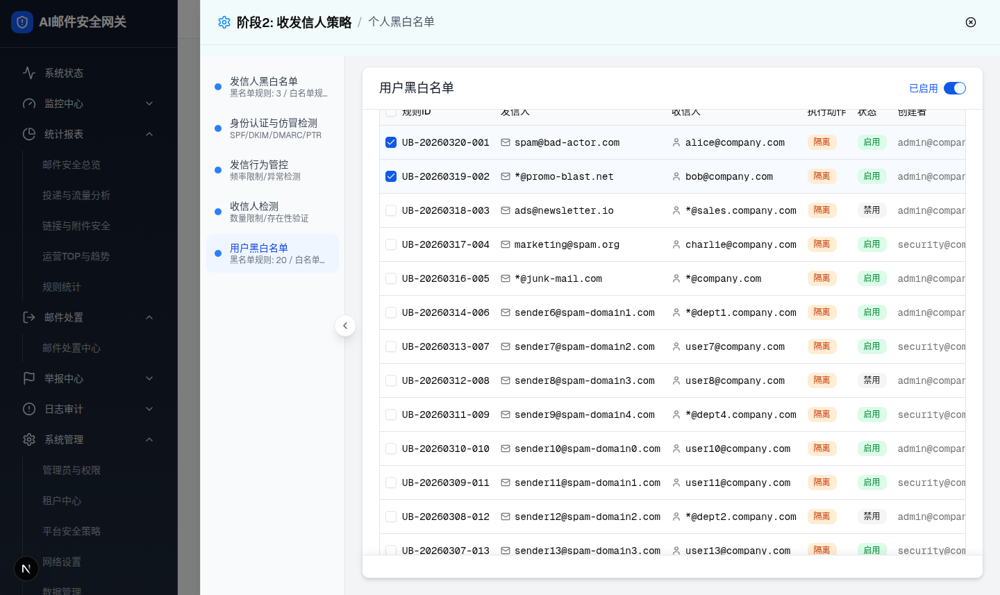
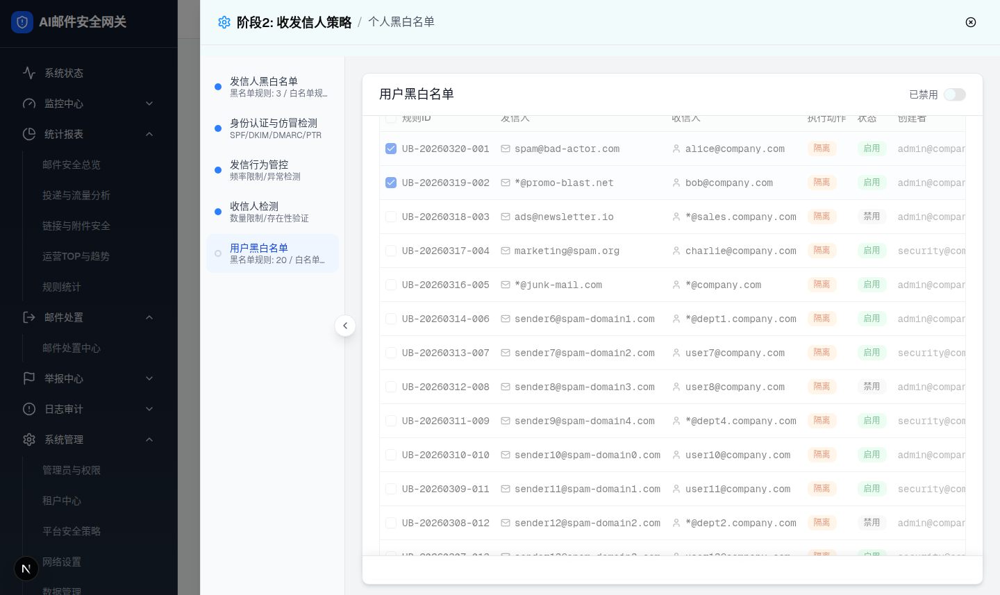
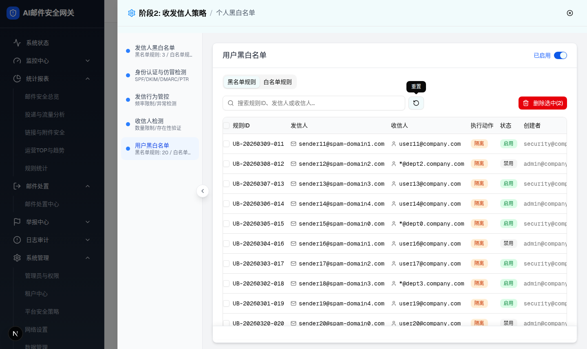

| 所属组件 | 2.3 列表操作交互（用户黑白名单） |
| 主文件 | index.html |
| 触发路径 | 层级1 列表态 → 搜索框输入 / 分页控件点击 / 每页条数下拉 / 卡头启用开关 |
| demo 组件 | identity-strategy-page.tsx renderUserListConfig()（Input / Select / Button / Switch） |
| 规则ID | 发信人 | 收信人 | 执行动作 | 状态 |
|---|
| 交互 | demo 实际行为（浏览器验证事实） | 预览复刻 |
|---|---|---|
| 搜索“alice” | 过滤出 1 行 UB-20260320-001；分页变“共 1 条 | 1” | 同 |
| 搜索无结果 | 单行“暂无数据”居中；整个分页控件隐藏 | 同 |
| 重置按钮 | 清空搜索、恢复 10 行、回第1页；hover/focus Tooltip“重置” | 同（hover/focus 显示 tip） |
| 页码点击 2 | 首行变 UB-20260309-011（第2页第1行） | 同 |
| 跳页输入 2 + Enter | 同页码点击；非数字/越界（如 99）忽略，停留当前页 | 同（含忽略逻辑） |
| 每页条数选 20 | 单页 20 行、页码回1、分页文本“共 20 条 | 1 | 20条/页” | 同 |
| 卡头开关关闭 | 内容区加 opacity-50 pointer-events-none，标签变“已禁用” | 同 |







| 状态/比对项 | demo 实际 DOM | 提取的 HTML / 预览 | 是否一致 |
|---|---|---|---|
| 搜索“alice”行数 | tbody 1 行，首行 [UB-20260320-001, spam@bad-actor.com, alice@company.com, 隔离, 启用]；input.value="alice" | 预览同数据同行为 | 一致 |
| 空态节点 | tbody 单行 td[colspan=9].text-center“暂无数据”；分页容器不在 DOM（filtered.length>0 条件渲染） | “暂无数据”块显示 + 分页 .is-hidden | 一致 |
| 第2页首行 | UB-20260309-011 / sender11@spam-domain1.com / user11@company.com；页码按钮 [1=outline, 2=default] | 同数据；页码2 active | 一致 |
| 每页条数选项 | [role=option] ×4：10条/页 / 20条/页 / 50条/页 / 100条/页 | native select 同 4 项（Radix 下拉以原生 select 代替） | 一致（控件形态简化） |
| 20条/页生效 | tbody 20 行；分页“共 20 条 | 1 | 20条/页” | 同 | 一致 |
| 禁用态 | 配置根 class=space-y-4 opacity-50 pointer-events-none；switch data-state=unchecked；卡头文案“已禁用” | [data-panel].disabled-panel + 标签切换 | 一致 |
| Tooltip | [data-radix-popper-content-wrapper] 文本“重置” | CSS tip 元素“重置” | 一致（实现方式简化） |